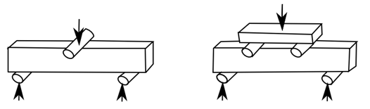
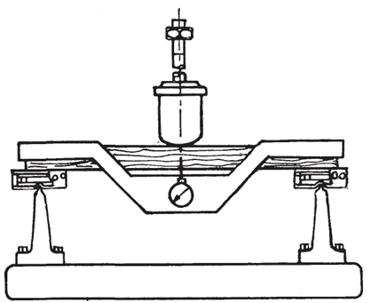
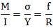
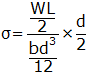
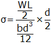
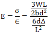
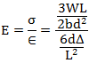

In bending test on wood experiment the specimen is placed on the universal testing machine under single-point bending arrangement and the supports
are pinned at both sides because when we apply load on the specimen the specimen will start to bend due to the force and it will allow free rotations
and small lateral movement due to loading. The wood specimen is placed straight in the universal testing machine to provide more stability,
strength and to reduce the failure deflection during the experiment. The dial gauge is placed below the center point and loads are applied.

a) Three point loading b) Four point loading
To determine the yield stress, modulus of rupture, modulus of elasticity, the bending equation is,

Equipment for static bending
To determine the yield stress, modulus of rupture, modulus of elasticity, the bending equation is,

Then flexural stress/yield stress is,
 

 Flexural strength/Modulus of rupture is the maximum capability of a material to resist the plastic deformation.
W= yield point load
Wf= maximum load
L= length of the support span
b=width of the specimen
d= thickness of the specimen
the flexural strain is nominal fractional change in the length of an element of the outer surface of the specimen at middle of span, where the maximum strain occurs.
∈ = flexural strain
∆= maximum deflection at the centre of the beam
Then modulus of elasticity is

Flexural strength/Modulus of rupture is the maximum capability of a material to resist the plastic deformation.
W= yield point load
Wf= maximum load
L= length of the support span
b=width of the specimen
d= thickness of the specimen
the flexural strain is nominal fractional change in the length of an element of the outer surface of the specimen at middle of span, where the maximum strain occurs.
∈ = flexural strain
∆= maximum deflection at the centre of the beam
Then modulus of elasticity is

 Test specimen:
The specimen for static bending test shall be 5 X 5 X 75 cm in length or 2 X 2 X 30 cm in length. The specimens shall be free from any defects
and shall not have a slope of grain more than 1 in 20 parallel to longitudinal edges. The load shall be applied continuously throughout the test
such that the movable head of the testing machine moves at a constant rate of 2•5 mm/ minute in case of 5 X 5 X 75cm and 1.0 mm per minute in
case of 2 X 2 X 30 cm.
side and followed by failure on the tension side. Within the elastic limit the elongations and shortenings are equal and the neutral plane lies
in the middle of the beam. Later the top layer of fibres on the compression side fail and on the increasing load the next layer of fibres fails
and so on. As a result the shortenings on the upper side of the beam become considerably greater than the elongations on the lower side. When
the stresses on the outer fibres at the bottom become sufficiently great the fibres are pulled out. But in case of dry beam, the drying increases
the stiffness of the fibres so that they offer more resistance to crushing while it has much less effect upon the tensile strength.
There is considerable variation in tension failures depending upon the toughness or the brittleness of the wood, the arrangement of the grain,
defects, etc. The most common forms of failures are:
1) Simple tension in which there is a direct pulling of fibres on the underside of the beam due to a tensile stress parallel to the grain.
This is common in straight-grained beams, particularly when the wood is seasoned.
2) Cross-grained tension in which the fracture is caused by a tensile force acting oblique to the grain. This is a common form of failure
when the beam is having diagonal, spiral or other form of cross grains on its lower side.
3) Splintering tension in which the failure consists of a considerable number of slight tension failures, producing a ragged or splintery break
on the under surface of the beam. This is common in tough woods. In this case the surface of fracture is fibrous.
4) Brittle /Brash tension in which the beam fails by a clean break extending entirely through it.
5) Compression failure appears at various distances from the neutral plane of the beam. It is very common form of failure in green timbers.
Stress strain graph of wood:
In this the vertical axis gives the increasing stress and the horizontal axis the increasing strain. Straight line indicates deflection is directly
proportional to the load and once the load is removed the beam will return to its original state. As the load increases load a limit point of
proportionality is reached after which the increase in amount of deflection is greater than the increase in load but elasticity is still retained
until an elastic limit is reached. At the point of maximum load, ultimate strength, the material begins to yield and will fracture unless load is
substantially reduced.
RELEVANT INDIAN STANDARD FOR BENDING TEST ON TIMBER:
1. IS 1708(part 5) : 1986, Methods of testing of small clear specimens of timber
Test specimen:
The specimen for static bending test shall be 5 X 5 X 75 cm in length or 2 X 2 X 30 cm in length. The specimens shall be free from any defects
and shall not have a slope of grain more than 1 in 20 parallel to longitudinal edges. The load shall be applied continuously throughout the test
such that the movable head of the testing machine moves at a constant rate of 2•5 mm/ minute in case of 5 X 5 X 75cm and 1.0 mm per minute in
case of 2 X 2 X 30 cm.
side and followed by failure on the tension side. Within the elastic limit the elongations and shortenings are equal and the neutral plane lies
in the middle of the beam. Later the top layer of fibres on the compression side fail and on the increasing load the next layer of fibres fails
and so on. As a result the shortenings on the upper side of the beam become considerably greater than the elongations on the lower side. When
the stresses on the outer fibres at the bottom become sufficiently great the fibres are pulled out. But in case of dry beam, the drying increases
the stiffness of the fibres so that they offer more resistance to crushing while it has much less effect upon the tensile strength.
There is considerable variation in tension failures depending upon the toughness or the brittleness of the wood, the arrangement of the grain,
defects, etc. The most common forms of failures are:
1) Simple tension in which there is a direct pulling of fibres on the underside of the beam due to a tensile stress parallel to the grain.
This is common in straight-grained beams, particularly when the wood is seasoned.
2) Cross-grained tension in which the fracture is caused by a tensile force acting oblique to the grain. This is a common form of failure
when the beam is having diagonal, spiral or other form of cross grains on its lower side.
3) Splintering tension in which the failure consists of a considerable number of slight tension failures, producing a ragged or splintery break
on the under surface of the beam. This is common in tough woods. In this case the surface of fracture is fibrous.
4) Brittle /Brash tension in which the beam fails by a clean break extending entirely through it.
5) Compression failure appears at various distances from the neutral plane of the beam. It is very common form of failure in green timbers.
Stress strain graph of wood:
In this the vertical axis gives the increasing stress and the horizontal axis the increasing strain. Straight line indicates deflection is directly
proportional to the load and once the load is removed the beam will return to its original state. As the load increases load a limit point of
proportionality is reached after which the increase in amount of deflection is greater than the increase in load but elasticity is still retained
until an elastic limit is reached. At the point of maximum load, ultimate strength, the material begins to yield and will fracture unless load is
substantially reduced.
RELEVANT INDIAN STANDARD FOR BENDING TEST ON TIMBER:
1. IS 1708(part 5) : 1986, Methods of testing of small clear specimens of timber

OBJECTIVE: To determine experimentally, the ultimate shear strength in double shear of mild steel plate. STEPS:
- Double click on the direct shear test on mild steel plate file , a window will open as shown below.

- Click on the NEXT button to move to the next step.

- Here the width and thickness of the mild steel plate is determined, then click on NEXT button to see the placing of the test set up.

- After placing the specimen in UTM move to next step by clicking on the NEXT button.

- Switch on the machine and apply load gradually.

- Load is applied till failure of the specimen, then click on NEXT button to check the results.

- The final results can be viewed from the tabular column as shown below.


- What is the standard size of the test specimen?
- Which are the failure types in wood under bending load?
- What is rate of loading in bending test?
- Write the formula for modulus of rupture?
- What deformation characteristics are observed in this test?

Check your ability to answer some of the questions relevant to the simulation that you used.
Get Started

- IS 1708-(Part 5)1986: Methods of testing of small clear specimens of timber, Second Revision, 2005.
- E,J. Hearn, Mechanics of Material, Pergaman Press, England,1972.
- F.P.Beer and E.R.Johnston, Mechanics of Material, 3rd Edition, Tata McGraw Hill, New-Delhi, 2007.
- F.L. Singer, Strength of Materials, Harper and Row Publishers.
- Gere and Timoshenko, Mechanics of Materials, CBS Publishers & Distributors.